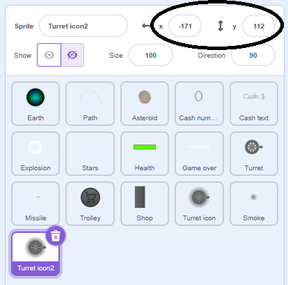
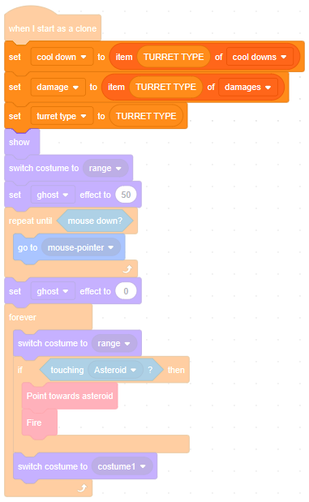

Introduction
Players like to make choices — it adds an element of strategy to a game.
We will offer a 'basic turret' in our shop, but also a more expensive and more powerful 'double turret' that they can save up for.
Buying
Load up the project you saved at the end of the last module.
Firstly, there's something we should fix - the shop currently lets you get turrets for free! Let's charge $20 per turret.
Select the Turret icon sprite and create a variable named cost (for this sprite only). Set it to 20 when the green flag is clicked:
When the sprite is clicked, we should only create a clone if we have enough cash, i.e. if cost is not greater than CASH:
We also need to reduce the amount of cash we have. How should we do that?
Go ahead and add that inside the if-then block:

It's really helpful to let players know when they can't do something by greying out the button. So this sprite should forever check whether there is enough cash to buy a turret and, if not, it should decrease its brightness. Add code for that inside the forever-loop.
Does your code look like this?
Switch to the Asteroid sprite and, instead of setting CASH to zero, set it to 20, so that players start with just enough to buy one turret:
Click the green flag. Does the turret icon still 'light up' when you hover over it?
Can you still buy a turret and place it on the stage?
After buying a turret, is the turret icon greyed out?
Good.
We're about to build a double turret, which will have twice the firepower. But that's not useful at the moment because each asteroid can be destroyed by a single hit from a basic turret missile. Let's give asteroids hit points, increasing with each wave, so asteroids become harder to destroy over time.
Hit points
Still in the Asteroid sprite, make a variable named hit points (for this sprite only). Set the number of hit points to be the same as wave:
In the when I receive Asteroid hit script, don't just delete this clone. Instead, reduce hit points by 1, and only delete the clone if we have none left:
We could have written the script like 'if hit points is zero, delete this clone'. Why is it better to check for hit points being less than one?
Click the green flag and place a turret on the stage. Is the first wave of asteroids destroyed by a single missile?
Do the asteroids in the second wave need two missile hits to be destroyed?
Good. Let's add one more improvement before we build our double turret — asteroids with more hit points should be bigger.
Size
If an asteroid's size is related to its hit points, then it lets the player know why some asteroids are harder to destroy than others.
Also, as each missile blows bits off an asteroid, we will see that asteroid get smaller.
In the when I start as a clone script, inside the repeat-until loop, add some code that scales up the asteroid's size by the square root of its hit points.
If we simply scaled up the asteroid's size by its hit points, asteroids would get very big very quickly.
By using the square root of the hit points, the asteroids get bigger with each wave, but it takes them much longer before they get crazy big.
Click the green flag and place a turret. What happens?
Good. Time to build a double turret.
Double turret
The moment we introduce a more expensive turret to the player, we need to let them know why it's better. Let's show the turret stats in the shop.
Select the Turret icon sprite, go to the Costumes tab, and duplicate costume1.
In the duplicated costume, costume2, draw a rectangle — black at the top fading to transparent at the bottom — and make it the same width as the shop we made in the last module (150 pixels in my case):
Select the Text tool, choose a grey Fill colour, and click to place the cursor at the top left of the black rectangle you just drew. Write the following text:
Basic turret
Cost: $20
Cooldown: 15 ticks
Damage: 1
If the text overflows the rectangle, use the select tool to resize it until it fits:
Switch to the code tab and, inside the forever-loop, instead of setting the brightness higher on mouse over, switch to costume2 on mouseover. Remember to switch back to costume1 if the mouse isn't touching the sprite. Also remember to set the brightness to zero before we check if we have enough cash (and grey out the sprite if not):
Test your code. Do the turret stats flash up on mouse-over?
Good. You might need to adjust the position or size of your text and its rectangle so that it looks good inside the shop:
Once you're happy, duplicate the whole of Turret icon — the new sprite will be called Turret icon2.
Set the x and y position of Turret icon2 to be exactly the same as Turret icon, in my case that's (-171, 112):
At the moment, we have two sprites exactly overlapping each other. If you press the green flag and open the shop, it will look like there's only one turret for sale. Go to costume1, select all (Ctrl + A), and drag the turret down so that sits just underneath where it was. Now open the shop. Does it look like this?
Good. Now that we've got the position right, let's turn it into a double turret. Duplicate the barrel, and place both barrels side-by-side:
Select all, copy (Ctrl + C) and paste into costume2 (Ctrl + V). Delete the single-barrelled turret from costume2, and update the text as follows:
Double turret
Cost: $50
Cooldown: 10 ticks
Damage: 2
Click the green flag and open the shop. What happens?
Switch to the Code tab and set the cost to 50:
Create a new variable TURRET TYPE (for all sprites). We will use this to store which type of turret the player is buying.
Set it to 1 in the Turret icon sprite, just before creating the clone, and set it to 2 in the Turret icon2 sprite:
Switch to the Turret sprite and create two lists (for this sprite only): cool downs and damages.

How do you think we're going to use these lists?
Correct — a list used in this way is known as a lookup.
If the player has bought a basic turret, TURRET TYPE will be 1, so item TURRET TYPE of cool downs will be 15.
However, if the player has bought a double turret, TURRET TYPE will be 2, so item TURRET TYPE of cool downs will be 10.
Similarly we can look up damage by turret type — the basic turret will do damage 1, the double turret, damage 2. Putting these together, our double turrets will not only pack twice the punch, they'll cool down more quickly too — will that make the extra cost worth it?
Create three new variables (for this sprite only) to capture the values that each clone cares about: cool down, damage and turret type.
Note that we have a variable, TURRET TYPE, and now also a very similar variable, turret type. The upper case one, TURRET TYPE, is for all sprites, so we can set it when one of the turret icons is clicked, and then a different sprite, the Turret sprite, can read it and know which kind of clone to make. The other, turret type, is for this sprite only, letting it store a different value for each clone, meaning we can have a mixture of different types of turrets to defend Earth. Using our upper case / lower case convention makes it easy to know which variable is which.
Let these variables capture the appropriate values when a turret clone is created:

Straight away we can update the Fire block. Currently we set time when cool to T + 15. That number, 15, is hard-coded. Replace it with the cool down variable, so that it varies depending on turret type:
Switch to the costume tab and duplicate costume1. Delete the basic turret, and copy-paste in the double turret you drew in the Turret icon2 sprite. Make sure that you centre it, and delete any drop shadow.
(While we're among the costumes, you might want to delete the barrel from the range costume. Since we'll use this costume when placing both kinds of turret, it would be nice to have something that works with either.)
Switch back to the Code tab and, at the end of the forever-loop, don't switch back to costume1 — that's a hard-coded value. Switch to turret type instead:
Well spotted. This will work because you can tell Scratch to switch costume based either on name or on number.
The basic turret will have a turret type of 1, in which case this block will switch to the first costume. The double turret will have a turret type of 2, in which case this block will switch to the second costume.
Click the green flag and start playing. Once you've saved up enough, buy a double turret and place it on the stage. What happens?
Good. Time to increase the firepower.
Firepower
Missiles need to know how much damage to do so, in the Fire block, add damage to MISSILE INFO:
Switch to the Missile sprite.
Create a variable called damage (for this sprite only) and capture the appropriate value:
Now, when an asteroid is hit, it needs to know how much damage the missile did, so create a list named DAMAGES (for all sprites) and, when a missile hits an asteroid, add the appropriate value to the list:
Don't forget to clear out the DAMAGES list when the green flag is clicked:
Switch to the Asteroid sprite.
When the asteroid is hit, don't just take off one hit point, take off the number of hit points we just added to DAMAGES. Don't forget to delete that item from the list afterwards:
Test your code changes. Are the double turrets inflicting twice the damage? (If it's hard to test, try temporarily starting the game with $50 so you can buy a double turret right away, and see if it destroys the wave 2 asteroids with a single hit.)
You might have noticed a bug — if an asteroid touches a turret, everything slows right down, and the turret's thin blue aim costume becomes visible, spinning wildly around. Let's avoid this bug, and also make the game more challenging, by letting asteroids destroy turrets when they touch them — add code to the Turret sprite:
Test your code change. Are turrets destroyed when asteroids hit them?
It would be nice if the double turret fired a double missile. Switch to the Missile sprite and duplicate costume1.
Copy-paste the single missile, and position the two missiles next to each other (symmetrically about the middle line, the same distance apart as the two barrels):
Switch back to the Code tab, and switch the costume to damage.
Note: this is what's known as a hack. It 'just happens' that we want the single missile costume when the damage is 1 and the double missile costume when the costume is 2, but what if we want to create a third costume that does 4 damage? The current code would try to pick costume number 4, which wouldn't exist!
It would be safer to add a fifth item to the MISSILE INFO list containing the missile costume number, but we'll leave that as an exercise for the keen reader.
A final touch — let's leave a bigger smoke trail if we're firing two missiles. Add some code for that too. Does your script look like this?

Click the full screen button, click the green flag, and see how well you can defend planet Earth...
Next steps
Save your project.
See if you can make the game better.
Maybe you could add more types of turret?
Maybe you could add some sound effects for the explosions?
What ideas can you come up with?
What did you think of this module?
I didn't like it

It was OK

I loved it